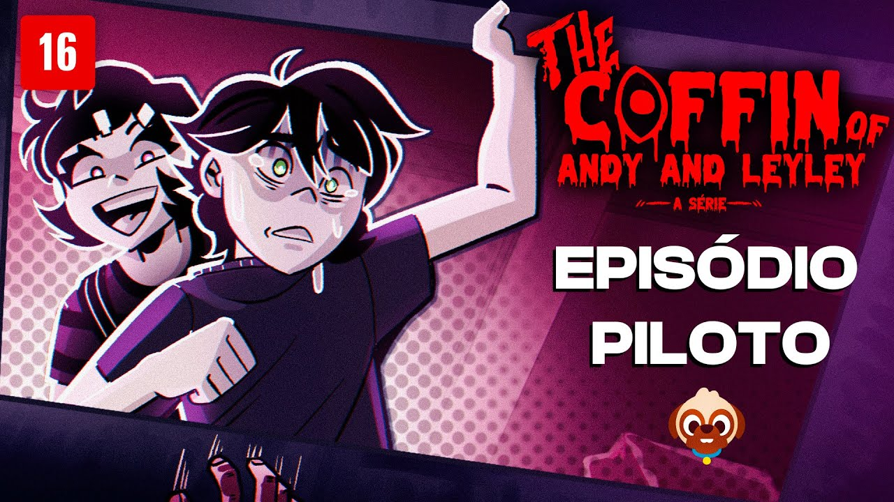

☰
A história acompanha Andy, um jovem assombrado por um passado sombrio, e Leyley, a sua irmã profundamente obcecada por ele. Unidos pelo sangue e por segredos perturbadores, os dois embarcam numa jornada macabra que expõe os limites da sanidade, da codependência e da culpa.

13:06Andy e Leyley sempre tiveram uma relação tumultuada. Mas quando Leyley descobre que a sua amiga está interessada no seu irmão, decide que isso não pode ficar sem consequências e sugere uma ideia incomum: "dar uma lição na garota".
 2:51
2:51
Um vislumbre exclusivo dos primeiros minutos do Episódio 1 com o novo estilo de arte.
Direção: Sr Dio
Roteiro & Storyboard: LunahYoru
Direção de Voz: Sr Dio, LunahYoru
Produção Executiva: Pedro Teixeira
Personagens: Samis
Cenários: Otto, Naldimar Filho & Samis
Animação: Hgl, oyPixel, Stellz
Thumbnail: 4lzh3imer (Arte), Sr Dio (Comp.)
Trilha Sonora Original: ZG, Tcoaal OST
Mixagem de Áudio: Reddinthemic
Edição: Sr Dio, Hgl, Kachiluna (Abertura)
Legendas: Souodudu
Tradução (EN/ES): Hunter
Aviso: Esta série é uma produção independente da Bonk Studios inspirada na história de "The Coffin of Andy and Leyley" e não é endossada, patrocinada ou autorizada pelos desenvolvedores da Kit9 Studio.
Comprar o jogo original na Steam ↗